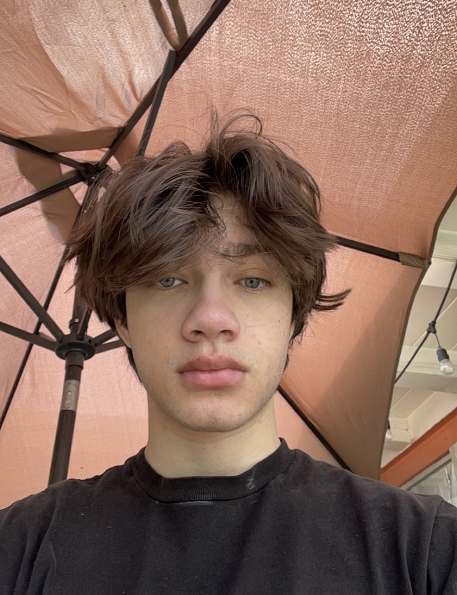

Robert Greer

Summary
I'm currently a computer science student studying at CSULB hoping to gain experience in
software engineering and cybersecurity fields. I am driven and am willing to learn whatever
is needed to thrive when I get an opportunity.
Education
- Bachelor of Science, Computer Science - California State University Long Beach | Expected Graduation June 2027
Projects
Individual Contributor | 2D Platformer Game
Summer 2024
- Designed a functional 2D platformer game with animations and physics elements utilizing Unity’s game engine and C#
- Implemented core gameplay mechanics, including character movement, jumping, and collision detection, resulting in smooth and responsive player interaction
Extra Curricular Activities
Skills
- Python
- HTML
- Java
- Team player
Other